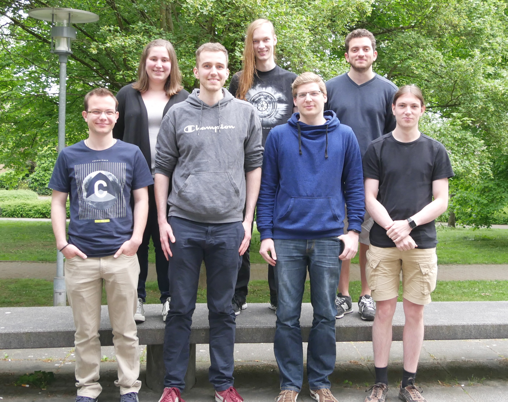

Ab jetzt gibt es eine extra Info-Seite zu unseren Mentoren. Nach dem Dojo am Freitag den 20.05.16 haben wir dafür Bilder gemacht. Die Seite findet ihr hier.
Zu diesem Projekt haben fast alle Kinder, die mit Scratch programmieren lernen, einen Fisch oder einen anderen Aquariumbewohner beigesteuert. Dadurch ist das Aquarium wirklich hübsch bunt und voll geworden.
An drei aufeinanderfolgenden Terminen
veranstalteten wir unsere Einsteigerworkshops
mit den Raspberry-Pi's. Dabei lernten die Teilnehmer
wie man Schaltungen auf einem Steckbrett zusammenbaut.
Es kamen verschiedene Bauteile, u.a. auch LED's
und Temperatursensoren zum Einsatz. Programiert wurde
dabei mit Python.
Ein weiterer Raspberry-Pi Workshop mit neuen
Aufgaben ist derzeit in Planung. Die Termine werden
frühzeitig bekanntgegeben.
Im März 2015 fand unter Leitung von
Mark und Ricarda, das erste CoderDojo in Karlsruhe statt.
Mit dabei waren 5 Mentoren und 11 Teilnehmer. Inzwischen,
ein Jahr später sind wir meist etwas weiger Mentoren,
aber doppelt so viele Teilnehmer in den Dojos.
Am 11. März fand nun schon das 27. Dojo in Karlsruhe statt.
Wir sind stolz, dass einige der Kinder schon seit
Beginn dabei sind und bisher kaum ein Treffen
verpasst haben.
Bei den Mentoren sind bedingt
durch das Studium oder die Arbeit im Laufe der Zeit einige
ausgestiegen und andere hinzugekommen.
Umso mehr freut es uns, dass Rafael
und Tim uns schon seit dem ersten Treffen begleiten
und auch weiterhin regelmäßig dabei sind.
Aber nur durch im laufe der Zeit und ganz neu hinzugekommene
Mentoren können wir das Dojo weiterhin alle zwei Wochen durchführen.
Wir freuen uns daher auch immer über neue Leute im Team.